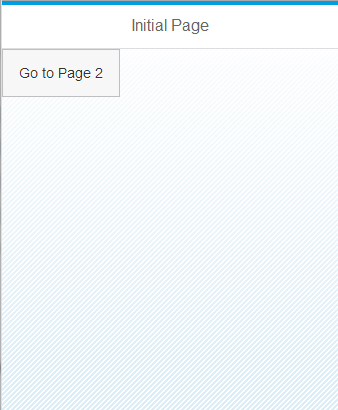

How to create a Mobile "Hello World" App in 23 seconds
This page explains how to create a UI5 Mobile application - from scratch within 23 seconds (with some practice…).
- If you are interested in exactly doing this without reading too much, you can jump right down to the respective section on this page.
- If you prefer a solid introduction, the SAPUI5 Mobile wiki area might be better suited as starting point.
Explanation
This page assumes you have seen and understood the SAPUI5 Hello World in 20 seconds example, so you are familiar with how UI5 is loaded, how controls are instantiated and how they are added to the HTML page.
This page therefore only explains the parts specific to the creation of a mobile app.
To make this clear up front: UI5 on mobile devices and on desktop browsers is pretty much the same thing. All the concepts like data binding, the MVC pattern and so on are available on mobile as well. UI5 just provides an additional control library ("sap.m") which is optimized for mobile devices by focusing on touch interaction, providing a mobile-style theme which makes users feel comfortable on both Android and Apple devices, and by using the most advanced features of the browsers available on modern smart phones and tablets.
NOTE: as this "sap.m" mobile library is optimized for mobile browsers which are based on Webkit or alternatively for IE10, it does currently NOT run properly in other browsers, like Internet Explorer 9 and Firefox. When testing on desktop PCs, please use Chrome or Safari.
Furthermore, the mobile library only uses touch events and deduces its appearance from the platform it is running on. Hence, when testing in desktop Chrome/Safari or IE10, a URL parameter is needed which suggests to emulate touch events from the mouse events and to apply the styling for either Android, iOS, BlackBerry or Windows Phone. The URL parameter is: sap-ui-xx-fakeOS=android, sap-ui-xx-fakeOS=ios, sap-ui-xx-fakeOS=blackberry or sap-ui-xx-fakeOS=winphone, respectively. (This parameter could also be added as "data-sap-ui-xx-fakeOS" attribute to the bootstrap script tag.) Note that "winphone" simulation only works in Internet Explorer 10 and "ios"/"android"/"blackberry" only in Chrome and Safari.
Creating the Mobile Application
Basic Structure of a SAPUI5 Application
Just like on desktop:
- HTML is the foundation of UI5 applications, so one needs an HTML file.
- Putting the HTML5 doctype "<!DOCTYPE html>" in the first line and the Internet-Explorer-specific meta tag "<meta http-equiv="X-UA-Compatible" content="IE=edge" />" to the beginning(!) of the <head> ensures that all browsers use the latest version of their rendering engine. Internet Explorer is not really used widely on mobile devices and not supported yet by the UI5 mobile library, but this meta tag does not hurt and in doubt it makes the page more future-proof.
- A second meta tag "<meta http-equiv="Content-Type" content="text/html;charset=UTF-8"/>" lets all browsers treat the file as UTF-8 encoded (assuming that you use this encoding when editing/saving the file)
- In the HTML <body> there needs to be a place where the App HTML will go. We will just add a <div> element as only content to the HTML.
- The "sapUiBody" class should always be added to the <body> tag of a UI5 application to initialize font and colors for the whole page:
<body class="sapUiBody"> <!-- This is where the App will live: --> <div id="content"></div> </body>
- As UI5 is a JavaScript UI library, the UI5 JS file needs to be loaded. The following script tag in the <head> does this.
- Make sure the URL is pointing to a UI5 installation accessible from your site.
- Note how this is equal to writing desktop apps.
- But also note that we are only loading the "sap.m" control library and the "sap_bluecrystal" theme:
<script src="http://<your server with SAPUI5 installed>/sapui5/resources/sap-ui-core.js" id="sap-ui-bootstrap" data-sap-ui-libs="sap.m" data-sap-ui-theme="sap_bluecrystal"> </script>
- At this point, UI5 (including the Mobile controls) is loaded and ready for use.
How to set up a SAPUI5 Mobile Application
The sap.m library provides a control called App which is meant to be the root control of a mobile application. It provides initialization of the HTML page, sets some meta tags to ensure as-native-as-possible look&feel and can manage different pages and the animations between them.
Just create the control and tell it which page should be displayed first.
// create a mobile App // it initializes the HTML page for mobile use and provides animated page handling var app = new sap.m.App("myApp", {initialPage:"page1"}); // page1 should be displayed first
Instead of using the App control, you can also use jQuery.sap.initMobile() to set up the HTML and use other full-screen controls like the sap.m.Page or sap.m.Carousel as root element of your app.
Adding Content Pages
Adding the Main Page
Typical mobile applications are often composed of a number of pages/views/screens between which the user can navigate. Two of them are now added to the App.
IMPORTANT: while sap.m.Page controls can be used as pages, and the aggregation is called "pages", other controls could be used as well'''
One sap.m.Page control is created, its title is set and the content is just one Button:
// create the first page of your application var page1 = new sap.m.Page("page1", { title: "Initial Page", content : new sap.m.Button({ // content is just one Button text : "Go to Page 2", press : function() { app.to("page2"); // when pressed, it triggers drilldown to page 2 } }) });
When the Button is pressed, it triggers drilldown navigation by calling app.to("page2") ("page2" is the ID of the second screen/page).
Optionally, the animation type could be given here - the default is a "slide" animation from right to left.
Adding the Second Page
The second page is created similarly. In contrast to the main page "showNavButton" is set to "true" to get a "Back" button. And when this button is triggered, the handler takes care of calling app.back(). This causes an inverse animation leading back to the main page.
// create the second page of your application var page2 = new sap.m.Page("page2", { title: "Page 2", showNavButton: true, // page 2 should display a back button navButtonPress: function(){ app.back(); // when pressed, the back button should navigate back up to page 1 }, icon: "http://www.sap.com/global/ui/images/global/sap-logo.png", content : new sap.m.Text({text:"Hello Mobile World!"}) });
A header icon (only visible on Android!) and some content saying "Hello Mobile World" is also given.
Placing the App onto the Screen
Finally, the two pages are added to the App and the App is placed into the HTML, just like a UI5 desktop control. The App takes care to cover the whole screen.
And how to do it in 23 seconds?
Assumption for these instructions to work exactly as described: you have a Windows Computer (other operating systems will work as well, but the instructions may differ), a current Webkit-based browser (Chrome or Safari) (the mobile library is currently not designed to run properly in Firefox or Internet Explorer) and you know where you can refer to SAPUI5 on some server.
Important: the URL in the script tag is pre-filled as " https://sapui5.hana.ondemand.com/resources/sap-ui-core.js" (which was at least available at the time of writing this document). Test this URL first: if it does not work, you need to find a different installation or deploy SAPUI5 on your own server.
Also note that the version of SAPUI5 deployed on https://sapui5.hana.ondemand.com/ may be updated with a delay of some days or weeks after a new release of SAPUI5, even though we try to keep them in sync. This example will work nevertheless.
- Right-click your desktop, select "New" → "Text Document"
- Name the new file e.g. "mobile.html" and accept the extension change warning
- Right-click the new file and select "Edit" (make sure it opens in Notepad or so, NOT in MS Word!)
- Copy&Paste the below HTML code and save the file (e.g. press Ctrl-S) (remember: the SAPUI5 URL may need to be adapted)
- Drag the file to this browser window (remember: it must be Chrome or Safari!)
- That's it. Well, that's only in a desktop browser so far, but to load it on a mobile device you'd need to put the file on a server which takes longer than a couple of seconds as long as you have not set up everything in advance.
- But you want to play around with the app at least in your desktop browser, so add the following URL parameter to the file URL: sap-ui-xx-fakeOS=ios, so the URL should read something like: "mobile.html?sap-ui-xx-fakeOS=ios"
- This enables simulation of touch events on desktop PCs
- This also enables the iPhone/iPad styling; if you want to see the Android styling, use "sap-ui-xx-fakeOS=android" instead
<!DOCTYPE HTML> <html> <head> <meta http-equiv="X-UA-Compatible" content="IE=edge" /> <meta http-equiv="Content-Type" content="text/html;charset=UTF-8"/> <title>Mobile App in 23 Seconds Example</title> <script src="https://sapui5.hana.ondemand.com/resources/sap-ui-core.js" id="sap-ui-bootstrap" data-sap-ui-libs="sap.m" data-sap-ui-theme="sap_bluecrystal"> </script> <!-- only load the mobile lib "sap.m" and the "sap_bluecrystal" theme --> <script> // create a mobile App // it initializes the HTML page for mobile use and provides animated page handling var app = new sap.m.App("myApp", {initialPage:"page1"}); // page1 should be displayed first // create the first page of your application var page1 = new sap.m.Page("page1", { title: "Initial Page", content : new sap.m.Button({ // content is just one Button text : "Go to Page 2", press: function() { app.to("page2"); // when pressed, it triggers drilldown to page 2 } }) }); // create the second page of your application var page2 = new sap.m.Page("page2", { title: "Page 2", showNavButton: true, // page 2 should display a back button navButtonPress: function(){ app.back(); // when pressed, the back button should navigate back up to page 1 }, icon: "http://www.sap.com/global/ui/images/global/sap-logo.png", content : new sap.m.Text({text:"Hello Mobile World!"}) }); app.addPage(page1).addPage(page2); // add both pages to the App app.placeAt("content"); // place the App into the HTML document </script> </head> <body class="sapUiBody"> <div id="content"></div> </body> </html>
Result
If you followed the steps above you should now see the Mobile App.

If you click the button (and have not forgotten the "sap-ui-xx-fakeOS" URL parameter), navigation to the second page will occur.
You can also launch this small application by pointing your mobile browser to this URL. Open it in a new window or tab to make sure it does not appear inside the demokit (the URL should start with "…demokit/content…" not with "…demokit/#content…").
To open the application on a real mobile device, you can also put the HTML document on a web server and load the resulting URL in your mobile browser.
Next Steps
You could now…
- Try different navigation animation types (e.g. add "fade" or "flip" as second parameter to the app.to("page2") call)
- Add more pages
- Add more content to the pages
- Try out other mobile controls like the sap.m.Popover
- …
Why 23 seconds and not 20, 21, or any other number of seconds?
In contrast to the other examples you need to add the URL parameter to make the App really usable on a desktop browser, so this takes a couple of seconds longer than usual…